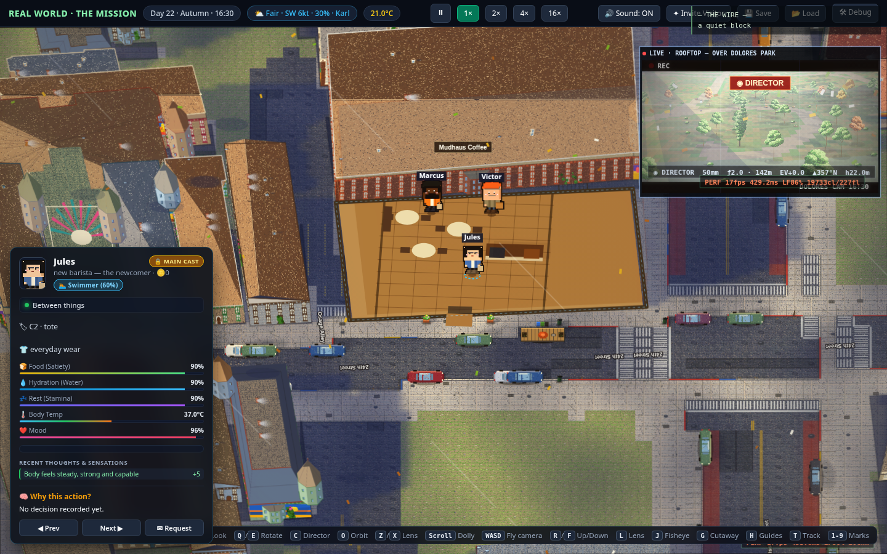
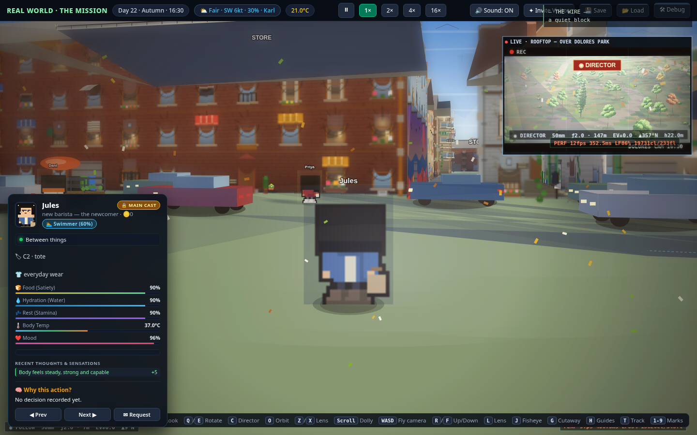
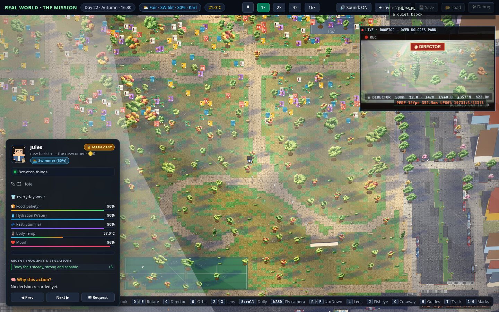
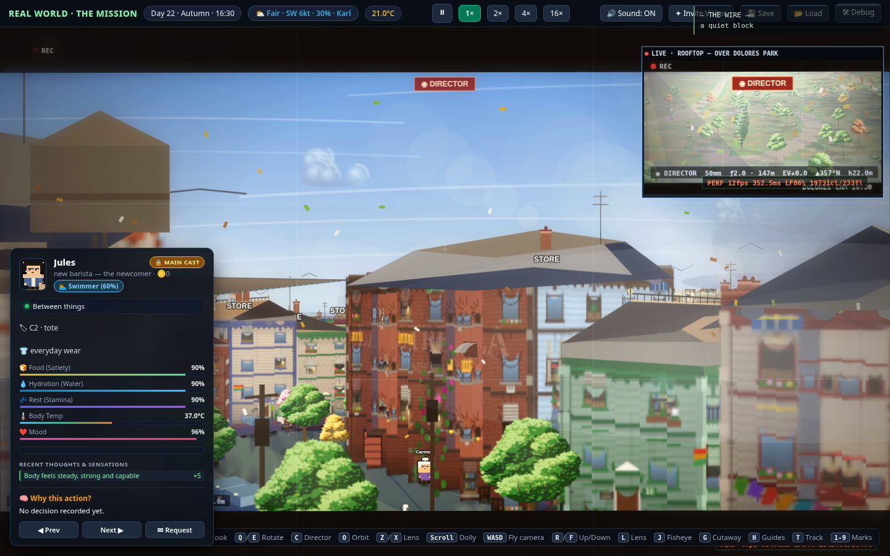
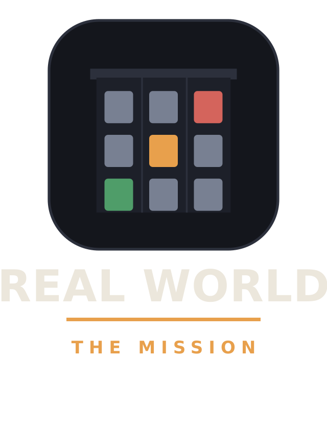
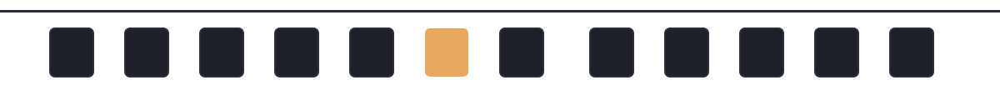
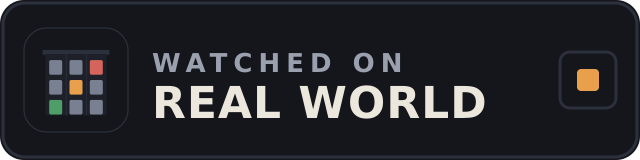

Contact sheet — every image in the kit
One page to scan the whole asset bundle. Filenames match the folders in this kit exactly. Full captions and credit lines: captions.txt. Usage terms: LICENSE.txt. Screenshots show a development build — keep the "in development" label when publishing.
Key art

keyart/keyart-16x9.png1920×1080 hero — rooftops toward distant shower cells under the title.
keyart/keyart-square.png1080×1080 for feeds and thumbnails.Screenshots — current renderer (v84)

screenshots/v84-A.pngTop-down, in-world Day 22 — the Mudhaus Coffee dollhouse cutaway open, Jules inside, Wire rooftop cam in the corner.
screenshots/v84-B.pngStreet level — Jules up close, dressed facades, name tags over residents.
screenshots/v84-C.pngDolores Park overhead — crown-genome trees in rust and gold, meadow drifts, shade pooling east.
screenshots/v84-D.pngDirector mode — thirds grid + center cross on, viewfinder strip reading EV/compass/height.Each shot also ships as a
.webp companion for lighter pages.
Screenshots — interiors & early pass

screenshots/v16-int-cafe.pngInterior vignette — the corner café behind the storefront glass.
screenshots/v16-int-flat.pngInterior vignette — a residential flat.
screenshots/v1-A.pngv1 early pass — pair with v84-A for before/after.
screenshots/v1-B.pngv1 early pass — pair with v84-B.Logos & marks
logos/logo-primary.svg / .pngLight-text lockup — dark backgrounds only.logos/logo-primary-dark.svgDark-ink lockup — light/white surfaces.logos/logo-icon.svg / .pngThe lit-window mark, square.logos/logo-icon-mono.svgSingle-ink icon — inherits text color.logos/logo-icon-animated.svgAnimated icon (SMIL) — feeds and video bumpers.
logos/logo-stacked.svgStacked lockup for vertical spaces.
logos/pattern-windows.svgRepeating lit-window pattern — backgrounds.Badges & banners

badges/badge-watched.svg"WATCHED ON REAL WORLD" embed badge — dark surfaces.badges/badge-watched-mono.svgSingle-ink badge — overlays, one-color print.
banners/banner-x-1500x500.pngX/Twitter header.
banners/banner-youtube-2560x1440.pngYouTube channel art — safe-zone padded.
banners/banner-discord-960x540.pngDiscord banner.
banners/banner-linkedin-1584x396.pngLinkedIn banner.Rules that apply to everything on this sheet:
editorial use with attribution ("Real World (in development)"); don't
recolor, stretch, or redraw the lit-window mark; don't imply endorsement;
don't present placeholder contact fields as real contact info.